Solve Mixture Applications
Solve Coin Word Problems
In mixture problems, we will have two or more items with different values to combine together. The mixture model is used by grocers and bartenders to make sure they set fair prices for the products they sell. Many other professionals, like chemists, investment bankers, and landscapers also use the mixture model.
We will start by looking at an application everyone is familiar with—money!
Imagine that we take a handful of coins from a pocket or purse and place them on a desk. How would we determine the value of that pile of coins? If we can form a step-by-step plan for finding the total value of the coins, it will help us as we begin solving coin word problems.
So what would we do? To get some order to the mess of coins, we could separate the coins into piles according to their value. Quarters would go with quarters, dimes with dimes, nickels with nickels, and so on. To get the total value of all the coins, we would add the total value of each pile.
How would we determine the value of each pile? Think about the dime pile—how much is it worth? If we count the number of dimes, we’ll know how many we have—the number of dimes.
But this does not tell us the value of all the dimes. Say we counted 17 dimes, how much are they worth? Each dime is worth $0.10—that is the value of one dime. To find the total value of the pile of 17 dimes, multiply 17 by $0.10 to get $1.70. This is the total value of all 17 dimes. This method leads to the following model.
The number of dimes times the value of each dime equals the total value of the dimes.
We could continue this process for each type of coin, and then we would know the total value of each type of coin. To get the total value of all the coins, add the total value of each type of coin.
Let’s look at a specific case. Suppose there are 14 quarters, 17 dimes, 21 nickels, and 39 pennies.
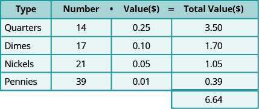
The total value of all the coins is $6.64.
Notice how the chart helps organize all the information! Let’s see how we use this method to solve a coin word problem.
Adalberto has $2.25 in dimes and nickels in his pocket. He has nine more nickels than dimes. How many of each type of coin does he have?
Solution
Solution
Step 1. Read the problem. Make sure all the words and ideas are understood.
- Determine the types of coins involved.
Think about the strategy we used to find the value of the handful of coins. The first thing we need is to notice what types of coins are involved. Adalberto has dimes and nickels. -
Create a table to organize the information. See chart below.
- Label the columns “type,” “number,” “value,” “total value.”
- List the types of coins.
- Write in the value of each type of coin.
- Write in the total value of all the coins.
The value of a dime is $0.10 and the value of a nickel is $0.05. The total value of all the coins is $2.25. The table below shows this information.
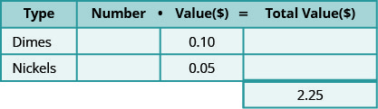
Step 2. Identify what we are looking for.
- We are asked to find the number of dimes and nickels Adalberto has.
Step 3. Name what we are looking for. Choose a variable to represent that quantity.
- Use variable expressions to represent the number of each type of coin and write them in the table.
- Multiply the number times the value to get the total value of each type of coin.
Next we counted the number of each type of coin. In this problem we cannot count each type of coin—that is what you are looking for—but we have a clue. There are nine more nickels than dimes. The number of nickels is nine more than the number of dimes.
Fill in the “number” column in the table to help get everything organized.
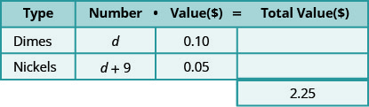
Now we have all the information we need from the problem!
We multiply the number times the value to get the total value of each type of coin. While we do not know the actual number, we do have an expression to represent it.
And so now multiply See how this is done in the table below.
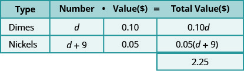
Notice that we made the heading of the table show the model.
Step 4. Translate into an equation. It may be helpful to restate the problem in one sentence. Translate the English sentence into an algebraic equation.
Write the equation by adding the total values of all the types of coins.
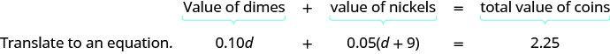
Step 5. Solve the equation using good algebra techniques.
| Now solve this equation. | 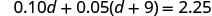 |
| Distribute. | 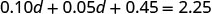 |
| Combine like terms. | 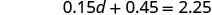 |
| Subtract 0.45 from each side. | |
| Divide. | |
| So there are 12 dimes. | |
| The number of nickels is . | |
| 21 |
Step 6. Check the answer in the problem and make sure it makes sense.
Does this check?
| 12 dimes | |
| 21 nickels |
Step 7. Answer the question with a complete sentence.
- Adalberto has twelve dimes and twenty-one nickels.
If this were a homework exercise, our work might look like the following.
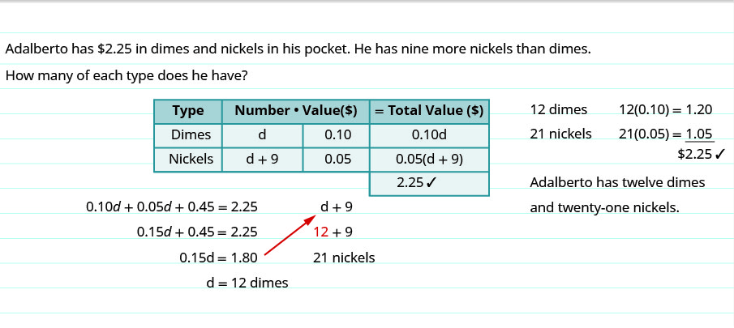
Maria has $2.43 in quarters and pennies in her wallet. She has twice as many pennies as quarters. How many coins of each type does she have?
Solution
Solution
Step 1. Read the problem.
Determine the types of coins involved.
We know that Maria has quarters and pennies.
Create a table to organize the information.
- Label the columns “type,” “number,” “value,” “total value.”
- List the types of coins.
- Write in the value of each type of coin.
- Write in the total value of all the coins.
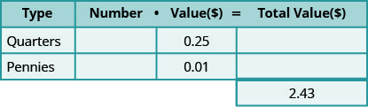
Step 2. Identify what you are looking for.
- We are looking for the number of quarters and pennies.
Step 3. Name. Represent the number of quarters and pennies using variables.
- We know Maria has twice as many pennies as quarters. The number of pennies is defined in terms of quarters.
- Let q represent the number of quarters.
- Then the number of pennies is 2q.
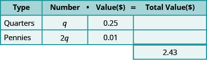
Multiply the ‘number’ and the ‘value’ to get the ‘total value’ of each type of coin.
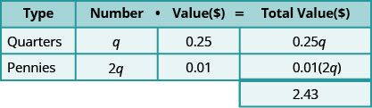
Step 4. Translate. Write the equation by adding the ‘total value’ of all the types of coins.
| Step 5. Solve the equation. | |
| Multiply. | |
| Combine like terms. | |
| Divide by 0.27. | |
| The number of pennies is . | |
| Step 6. Check the answer in the problem. | |
| Maria has 9 quarters and 18 pennies. Does this make $2.43? | |
| Step 7. Answer the question. | Maria has nine quarters and eighteen pennies. |
In the next example, we’ll show only the completed table—remember the steps we take to fill in the table.
Danny has $2.14 worth of pennies and nickels in his piggy bank. The number of nickels is two more than ten times the number of pennies. How many nickels and how many pennies does Danny have?
Solution
Solution
| Step 1. Read the problem. | |
| Determine the types of coins involved. | pennies and nickels |
| Create a table. | |
| Write in the value of each type of coin. | Pennies are worth $0.01. Nickels are worth $0.05. |
| Step 2. Identify what we are looking for. | the number of pennies and nickels |
| Step 3. Name. Represent the number of each type of coin using variables. | |
| The number of nickels is defined in terms of the number of pennies, so start with pennies. | Let number of pennies. |
| The number of nickels is two more than ten times the number of pennies. | number of nickels. |
| Multiply the number and the value to get the total value of each type of coin. | |
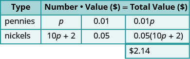 | |
| Step 4. Translate. Write the equation by adding the total value of all the types of coins. | |
| Step 5. Solve the equation. | 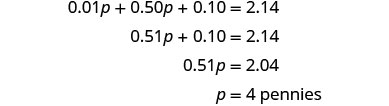 |
| How many nickels? | |
|
Step 6. Check the answer in the problem and make sure it makes sense Danny has four pennies and 42 nickels. Is the total value $2.14? |
|
| Step 7. Answer the question. | Danny has four pennies and 42 nickels. |
Solve Ticket and Stamp Word Problems
Problems involving tickets or stamps are very much like coin problems. Each type of ticket and stamp has a value, just like each type of coin does. So to solve these problems, we will follow the same steps we used to solve coin problems.
At a school concert, the total value of tickets sold was $1,506. Student tickets sold for $6 each and adult tickets sold for $9 each. The number of adult tickets sold was five less than three times the number of student tickets sold. How many student tickets and how many adult tickets were sold?
Solution
Solution
Step 1. Read the problem.
- Determine the types of tickets involved. There are student tickets and adult tickets.
- Create a table to organize the information.
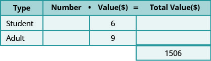
Step 2. Identify what we are looking for.
- We are looking for the number of student and adult tickets.
Step 3. Name. Represent the number of each type of ticket using variables.
We know the number of adult tickets sold was five less than three times the number of student tickets sold.
- Let s be the number of student tickets.
- Then is the number of adult tickets
Multiply the number times the value to get the total value of each type of ticket.
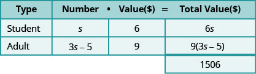
Step 4. Translate. Write the equation by adding the total values of each type of ticket.
Step 5. Solve the equation.
| 136 adult tickets |
Step 6. Check the answer.
There were 47 student tickets at $6 each and 136 adult tickets at $9 each. Is the total value $1,506? We find the total value of each type of ticket by multiplying the number of tickets times its value then add to get the total value of all the tickets sold.
Step 7. Answer the question. They sold 47 student tickets and 136 adult tickets.
We have learned how to find the total number of tickets when the number of one type of ticket is based on the number of the other type. Next, we’ll look at an example where we know the total number of tickets and have to figure out how the two types of tickets relate.
Suppose Bianca sold a total of 100 tickets. Each ticket was either an adult ticket or a child ticket. If she sold 20 child tickets, how many adult tickets did she sell?
- Did you say ‘80’? How did you figure that out? Did you subtract 20 from 100?
If she sold 45 child tickets, how many adult tickets did she sell?
- Did you say ‘55’? How did you find it? By subtracting 45 from 100?
What if she sold 75 child tickets? How many adult tickets did she sell?
- The number of adult tickets must be She sold 25 adult tickets.
Now, suppose Bianca sold x child tickets. Then how many adult tickets did she sell? To find out, we would follow the same logic we used above. In each case, we subtracted the number of child tickets from 100 to get the number of adult tickets. We now do the same with x.
We have summarized this below.
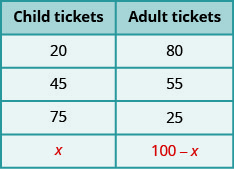
We can apply these techniques to other examples
Galen sold 810 tickets for his church’s carnival for a total of $2,820. Children’s tickets cost $3 each and adult tickets cost $5 each. How many children’s tickets and how many adult tickets did he sell?
Solution
Solution
Step 1. Read the problem.
- Determine the types of tickets involved. There are children tickets and adult tickets.
- Create a table to organize the information.
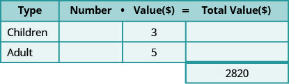
Step 2. Identify what we are looking for.
- We are looking for the number of children and adult tickets.
Step 3. Name. Represent the number of each type of ticket using variables.
- We know the total number of tickets sold was 810. This means the number of children’s tickets plus the number of adult tickets must add up to 810.
- Let c be the number of children tickets.
- Then is the number of adult tickets.
- Multiply the number times the value to get the total value of each type of ticket.
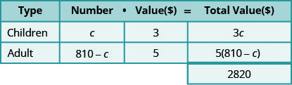
Step 4. Translate.
- Write the equation by adding the total values of each type of ticket.
Step 5. Solve the equation.
How many adults?
Step 6. Check the answer. There were 615 children’s tickets at $3 each and 195 adult tickets at $5 each. Is the total value $2,820?
Step 7. Answer the question. Galen sold 615 children’s tickets and 195 adult tickets.
Now, we’ll do one where we fill in the table all at once.
Monica paid $8.36 for stamps. The number of 41-cent stamps was four more than twice the number of two-cent stamps. How many 41-cent stamps and how many two-cent stamps did Monica buy?
Solution
Solution
The types of stamps are 41-cent stamps and two-cent stamps. Their names also give the value!
“The number of 41-cent stamps was four more than twice the number of two-cent stamps.”
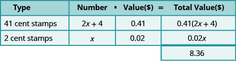
| Write the equation from the total values. | |
| Solve the equation. | |
| Monica bought eight two-cent stamps. | |
| Find the number of 41-cent stamps she bought be evaluating. | |
| Check. | |
| Monica bought eight two-cent stamps and 20 41-cent stamps. |
Solve Mixture Word Problems
Now we’ll solve some more general applications of the mixture model. Grocers and bartenders use the mixture model to set a fair price for a product made from mixing two or more ingredients. Financial planners use the mixture model when they invest money in a variety of accounts and want to find the overall interest rate. Landscape designers use the mixture model when they have an assortment of plants and a fixed budget, and event coordinators do the same when choosing appetizers and entrees for a banquet.
Our first mixture word problem will be making trail mix from raisins and nuts.
Henning is mixing raisins and nuts to make 10 pounds of trail mix. Raisins cost $2 a pound and nuts cost $6 a pound. If Henning wants his cost for the trail mix to be $5.20 a pound, how many pounds of raisins and how many pounds of nuts should he use?
Solution
Solution
As before, we fill in a chart to organize our information.
The 10 pounds of trail mix will come from mixing raisins and nuts.
We enter the price per pound for each item.
We multiply the number times the value to get the total value.
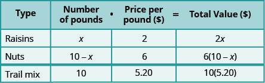
Notice that the last line in the table gives the information for the total amount of the mixture.
We know the value of the raisins plus the value of the nuts will be the value of the trail mix.
| Write the equation from the total values. | 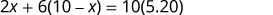 |
| Solve the equation. | |
| Find the number of pounds of nuts. | |
| 8 pounds of nuts | |
| Check. |
|
| Henning mixed two pounds of raisins with eight pounds of nuts. |
We can also use the mixture model to solve investment problems using simple interest. We have used the simple interest formula, where represented the number of years. When we just need to find the interest for one year, so then
Stacey has $20,000 to invest in two different bank accounts. One account pays interest at 3% per year and the other account pays interest at 5% per year. How much should she invest in each account if she wants to earn 4.5% interest per year on the total amount?
Solution
Solution
We will fill in a chart to organize our information. We will use the simple interest formula to find the interest earned in the different accounts.
The interest on the mixed investment will come from adding the interest from the account earning 3% and the interest from the account earning 5% to get the total interest on the $20,000.
The amount invested is the principal for each account.
We enter the interest rate for each account.
We multiply the amount invested times the rate to get the interest.
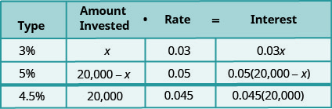
Notice that the total amount invested, 20,000, is the sum of the amount invested at 3% and the amount invested at 5%. And the total interest, is the sum of the interest earned in the 3% account and the interest earned in the 5% account.
As with the other mixture applications, the last column in the table gives us the equation to solve.
| Write the equation from the interest earned. Solve the equation. |
amount invested at 3% |
| Find the amount invested at 5%. |
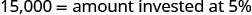 |
| Check. |
|
| Stacey should invest $5,000 in the account that earns 3% and $15,000 in the account that earns 5%. |
Key Concepts
-
Total Value of Coins For the same type of coin, the total value of a number of coins is found by using the model.
where number is the number of coins and value is the value of each coin; total value is the total value of all the coins -
Problem-Solving Strategy—Coin Word Problems
-
Read the problem. Make all the words and ideas are understood. Determine the types of coins involved.
- Create a table to organize the information.
- Label the columns type, number, value, total value.
- List the types of coins.
- Write in the value of each type of coin.
- Write in the total value of all the coins.
- Identify what we are looking for.
-
Name what we are looking for. Choose a variable to represent that quantity.
Use variable expressions to represent the number of each type of coin and write them in the table.
Multiply the number times the value to get the total value of each type of coin. -
Translate into an equation. It may be helpful to restate the problem in one sentence with all the important information. Then, translate the sentence into an equation.
Write the equation by adding the total values of all the types of coins. - Solve the equation using good algebra techniques.
- Check the answer in the problem and make sure it makes sense.
- Answer the question with a complete sentence.
-
Read the problem. Make all the words and ideas are understood. Determine the types of coins involved.
Practice Makes Perfect
Solve Coin Word Problems
In the following exercises, solve each coin word problem.
Jaime has $2.60 in dimes and nickels. The number of dimes is 14 more than the number of nickels. How many of each coin does he have?
Solution
8 nickels, 22 dimes
Lee has $1.75 in dimes and nickels. The number of nickels is 11 more than the number of dimes. How many of each coin does he have?
Ngo has a collection of dimes and quarters with a total value of $3.50. The number of dimes is seven more than the number of quarters. How many of each coin does he have?
Solution
15 dimes, 8 quarters
Connor has a collection of dimes and quarters with a total value of $6.30. The number of dimes is 14 more than the number of quarters. How many of each coin does he have?
A cash box of $1 and $5 bills is worth $45. The number of $1 bills is three more than the number of $5 bills. How many of each bill does it contain?
Solution
10 at $1, 7 at $5
Joe’s wallet contains $1 and $5 bills worth $47. The number of $1 bills is five more than the number of $5 bills. How many of each bill does he have?
Rachelle has $6.30 in nickels and quarters in her coin purse. The number of nickels is twice the number of quarters. How many coins of each type does she have?
Solution
18 quarters, 36 nickels
Deloise has $1.20 in pennies and nickels in a jar on her desk. The number of pennies is three times the number of nickels. How many coins of each type does she have?
Harrison has $9.30 in his coin collection, all in pennies and dimes. The number of dimes is three times the number of pennies. How many coins of each type does he have?
Solution
30 pennies, 90 dimes
Ivan has $8.75 in nickels and quarters in his desk drawer. The number of nickels is twice the number of quarters. How many coins of each type does he have?
In a cash drawer there is $125 in $5 and $10 bills. The number of $10 bills is twice the number of $5 bills. How many of each are in the drawer?
Solution
10 at $10, 5 at $5
John has $175 in $5 and $10 bills in his drawer. The number of $5 bills is three times the number of $10 bills. How many of each are in the drawer?
Carolyn has $2.55 in her purse in nickels and dimes. The number of nickels is nine less than three times the number of dimes. Find the number of each type of coin.
Solution
12 dimes and 27 nickels
Julio has $2.75 in his pocket in nickels and dimes. The number of dimes is 10 less than twice the number of nickels. Find the number of each type of coin.
Chi has $11.30 in dimes and quarters. The number of dimes is three more than three times the number of quarters. How many of each are there?
Solution
63 dimes, 20 quarters
Tyler has $9.70 in dimes and quarters. The number of quarters is eight more than four times the number of dimes. How many of each coin does he have?
Mukul has $3.75 in quarters, dimes and nickels in his pocket. He has five more dimes than quarters and nine more nickels than quarters. How many of each coin are in his pocket?
Solution
16 nickels, 12 dimes, 7 quarters
Vina has $4.70 in quarters, dimes and nickels in her purse. She has eight more dimes than quarters and six more nickels than quarters. How many of each coin are in her purse?
Solve Ticket and Stamp Word Problems
In the following exercises, solve each ticket or stamp word problem.
The school play sold $550 in tickets one night. The number of $8 adult tickets was 10 less than twice the number of $5 child tickets. How many of each ticket were sold?
Solution
30 child tickets, 50 adult tickets
If the number of $8 child tickets is seventeen less than three times the number of $12 adult tickets and the theater took in $584, how many of each ticket were sold?
The movie theater took in $1,220 one Monday night. The number of $7 child tickets was ten more than twice the number of $9 adult tickets. How many of each were sold?
Solution
110 child tickets, 50 adult tickets
The ball game sold $1,340 in tickets one Saturday. The number of $12 adult tickets was 15 more than twice the number of $5 child tickets. How many of each were sold?
The ice rink sold 95 tickets for the afternoon skating session, for a total of $828. General admission tickets cost $10 each and youth tickets cost $8 each. How many general admission tickets and how many youth tickets were sold?
Solution
34 general, 61 youth
For the 7:30 show time, 140 movie tickets were sold. Receipts from the $13 adult tickets and the $10 senior tickets totaled $1,664. How many adult tickets and how many senior tickets were sold?
The box office sold 360 tickets to a concert at the college. The total receipts were $4170. General admission tickets cost $15 and student tickets cost $10. How many of each kind of ticket was sold?
Solution
114 general, 246 student
Last Saturday, the museum box office sold 281 tickets for a total of $3954. Adult tickets cost $15 and student tickets cost $12. How many of each kind of ticket was sold?
Julie went to the post office and bought both $0.41 stamps and $0.26 postcards. She spent $51.40. The number of stamps was 20 more than twice the number of postcards. How many of each did she buy?
Solution
40 postcards, 100 stamps
Jason went to the post office and bought both $0.41 stamps and $0.26 postcards and spent $10.28. The number of stamps was four more than twice the number of postcards. How many of each did he buy?
Maria spent $12.50 at the post office. She bought three times as many $0.41 stamps as $0.02 stamps. How many of each did she buy?
Solution
30 at $0.41, 10 at $0.02
Hector spent $33.20 at the post office. He bought four times as many $0.41 stamps as $0.02 stamps. How many of each did he buy?
Hilda has $210 worth of $10 and $12 stock shares. The numbers of $10 shares is five more than twice the number of $12 shares. How many of each does she have?
Solution
15 $10 shares, 5 $12 shares
Mario invested $475 in $45 and $25 stock shares. The number of $25 shares was five less than three times the number of $45 shares. How many of each type of share did he buy?
Solve Mixture Word Problems
In the following exercises, solve each mixture word problem.
Lauren in making 15 liters of mimosas for a brunch banquet. Orange juice costs her $1.50 per liter and champagne costs her $12 per liter. How many liters of orange juice and how many liters of champagne should she use for the mimosas to cost Lauren $5 per liter?
Solution
5 liters champagne, 10 liters orange juice
Macario is making 12 pounds of nut mixture with macadamia nuts and almonds. Macadamia nuts cost $9 per pound and almonds cost $5.25 per pound. How many pounds of macadamia nuts and how many pounds of almonds should Macario use for the mixture to cost $6.50 per pound to make?
Kaapo is mixing Kona beans and Maui beans to make 25 pounds of coffee blend. Kona beans cost Kaapo $15 per pound and Maui beans cost $24 per pound. How many pounds of each coffee bean should Kaapo use for his blend to cost him $17.70 per pound?
Solution
7.5 lbs Maui beans, 17.5 Kona beans
Estelle is making 30 pounds of fruit salad from strawberries and blueberries. Strawberries cost $1.80 per pound and blueberries cost $4.50 per pound. If Estelle wants the fruit salad to cost her $2.52 per pound, how many pounds of each berry should she use?
Carmen wants to tile the floor of his house. He will need 1000 square feet of tile. He will do most of the floor with a tile that costs $1.50 per square foot, but also wants to use an accent tile that costs $9.00 per square foot. How many square feet of each tile should he plan to use if he wants the overall cost to be $3 per square foot?
Solution
800 at $1.50, 200 at $9.00
Riley is planning to plant a lawn in his yard. He will need nine pounds of grass seed. He wants to mix Bermuda seed that costs $4.80 per pound with Fescue seed that costs $3.50 per pound. How much of each seed should he buy so that the overall cost will be $4.02 per pound?
Vartan was paid $25,000 for a cell phone app that he wrote and wants to invest it to save for his son’s education. He wants to put some of the money into a bond that pays 4% annual interest and the rest into stocks that pay 9% annual interest. If he wants to earn 7.4% annual interest on the total amount, how much money should he invest in each account?
Solution
$8000 at 4%, $17,000 at 9%
Vern sold his 1964 Ford Mustang for $55,000 and wants to invest the money to earn him 5.8% interest per year. He will put some of the money into Fund A that earns 3% per year and the rest in Fund B that earns 10% per year. How much should he invest into each fund if he wants to earn 5.8% interest per year on the total amount?
Stephanie inherited $40,000. She wants to put some of the money in a certificate of deposit that pays 2.1% interest per year and the rest in a mutual fund account that pays 6.5% per year. How much should she invest in each account if she wants to earn 5.4% interest per year on the total amount?
Solution
$10,000 in CD, $30,000 in mutual fund
Avery and Caden have saved $27,000 towards a down payment on a house. They want to keep some of the money in a bank account that pays 2.4% annual interest and the rest in a stock fund that pays 7.2% annual interest. How much should they put into each account so that they earn 6% interest per year?
Dominic pays 7% interest on his $15,000 college loan and 12% interest on his $11,000 car loan. What average interest rate does he pay on the total $26,000 he owes? (Round your answer to the nearest tenth of a percent.)
Solution
9.1%
Liam borrowed a total of $35,000 to pay for college. He pays his parents 3% interest on the $8,000 he borrowed from them and pays the bank 6.8% on the rest. What average interest rate does he pay on the total $35,000? (Round your answer to the nearest tenth of a percent.)
Everyday Math
As the treasurer of her daughter’s Girl Scout troop, Laney collected money for some girls and adults to go to a 3-day camp. Each girl paid $75 and each adult paid $30. The total amount of money collected for camp was $765. If the number of girls is three times the number of adults, how many girls and how many adults paid for camp?
Solution
9 girls, 3 adults
Laurie was completing the treasurer’s report for her son’s Boy Scout troop at the end of the school year. She didn’t remember how many boys had paid the $15 full-year registration fee and how many had paid the $10 partial-year fee. She knew that the number of boys who paid for a full-year was ten more than the number who paid for a partial-year. If $250 was collected for all the registrations, how many boys had paid the full-year fee and how many had paid the partial-year fee?
Writing Exercises
Suppose you have six quarters, nine dimes, and four pennies. Explain how you find the total value of all the coins.
Solution
Answers will vary.
Do you find it helpful to use a table when solving coin problems? Why or why not?
In the table used to solve coin problems, one column is labeled “number” and another column is labeled “value.” What is the difference between the “number” and the “value?”
Solution
Answers will vary.
What similarities and differences did you see between solving the coin problems and the ticket and stamp problems?
Self Check
ⓐ After completing the exercises, use this checklist to evaluate your mastery of the objectives of this section.
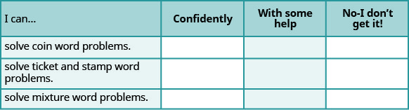
ⓑ After reviewing this checklist, what will you do to become confident for all objectives?